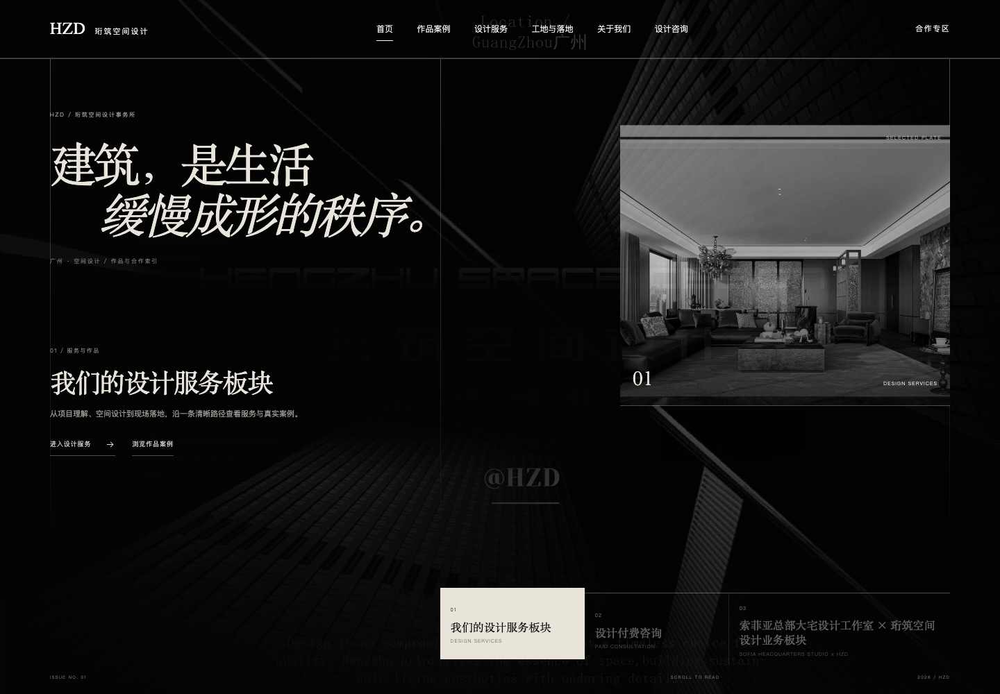
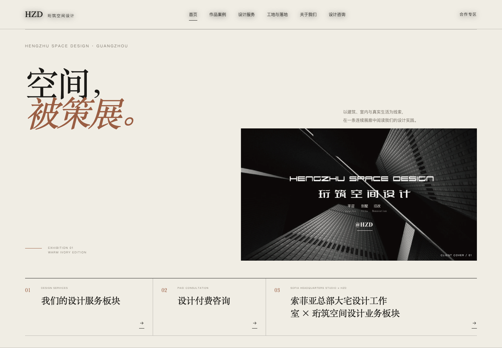
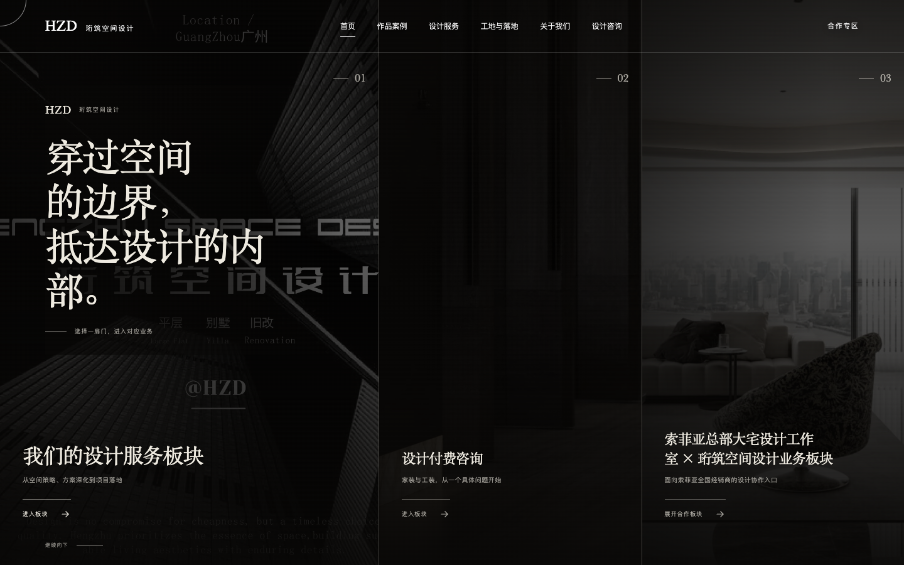
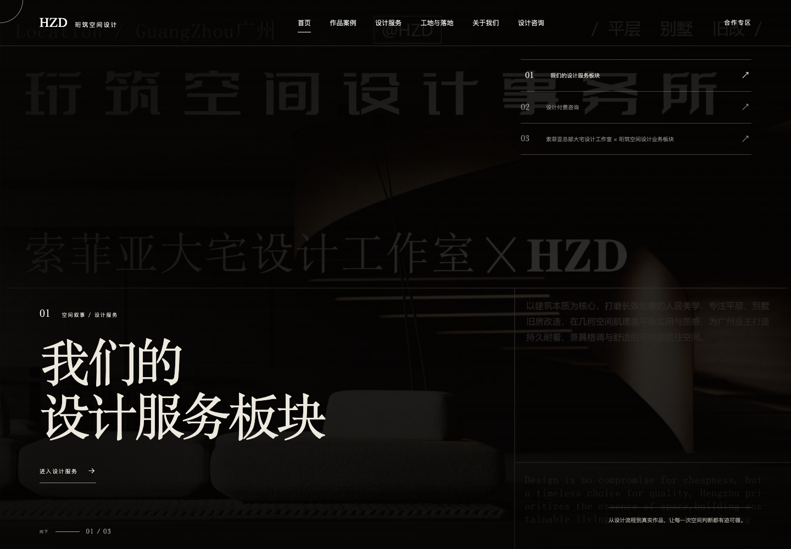
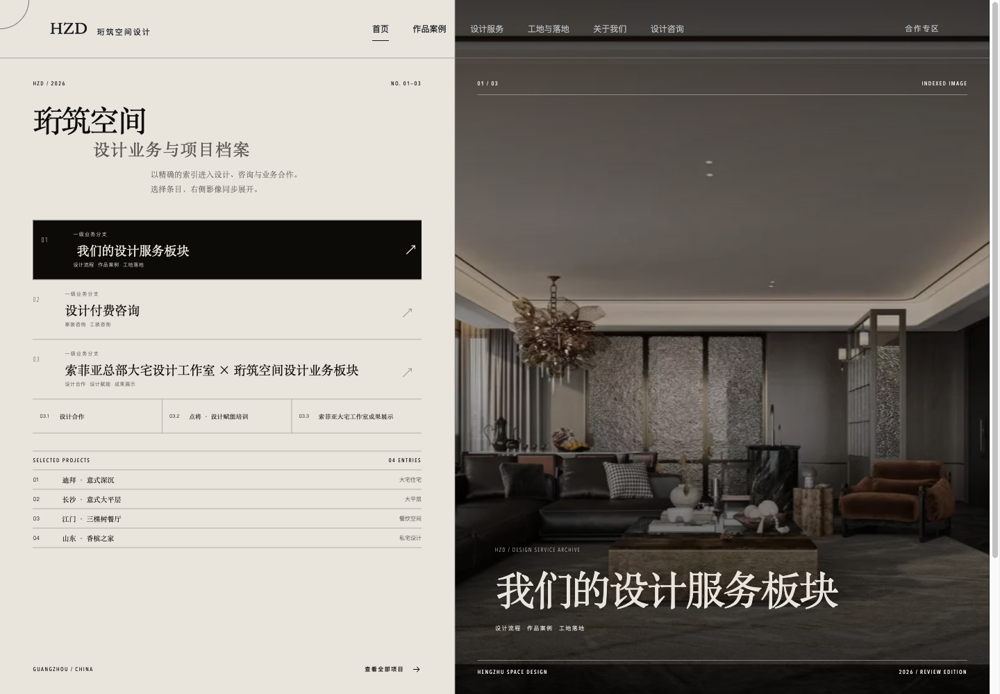

FIVE VISUAL DIRECTIONS
五个方向，
先凭直觉选择。
01 — 05
请先逐个打开体验首页、导航、业务分支和项目页。暂时不需要细究文案，只需选出最符合品牌气质的方向。

01 / EDITORIAL DARK
黑色建筑编辑
强对比、建筑尺度与刊物式编排，更冷静、克制。
进入完整方案 ↗
02 / WARM GALLERY
暖白空间策展
艺廊般的留白与展陈节奏，强调材质、温度和作品阅读。
进入完整方案 ↗
03 / SPATIAL THRESHOLDS
空间阈限叙事
用层次、开合与穿越感组织业务入口，更具互动仪式感。
进入完整方案 ↗
04 / CINEMATIC SCROLL
电影式滚动叙事
大画幅、镜头转场与沉浸式滚动，更重视动态氛围。
进入完整方案 ↗
05 / TYPOGRAPHIC ARCHIVE
字体空间档案
以字体、编号和索引构成识别，更像一本可浏览的设计档案。
进入完整方案 ↗